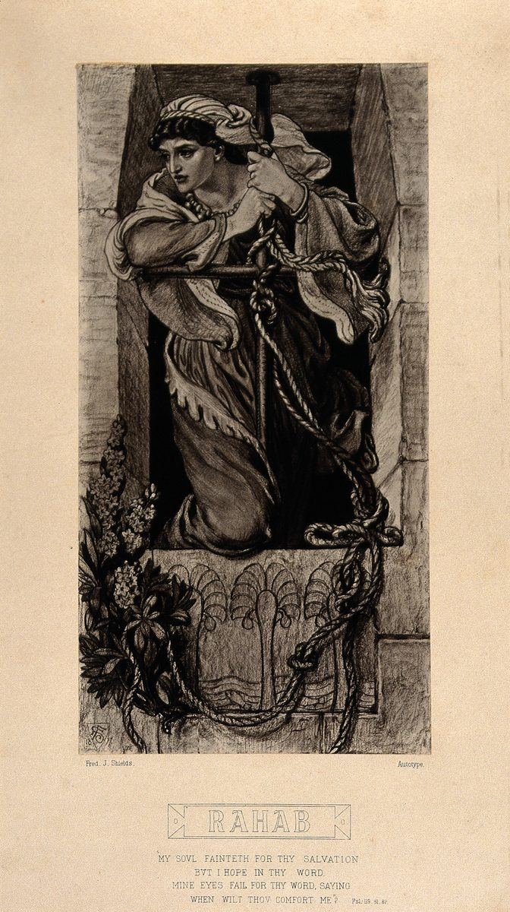

Josué 6 — La Traducción Mister

Shields no dibuja la huida de los espías (Josué 2) ni el derrumbe de los muros (Josué 6) — aísla el único objeto del que dependen ambos capítulos: el cordón mismo, todavía atado donde Rahab lo dejó, en una casa construida dentro del muro de la ciudad (Josué 2:15). Este capítulo la nombra dos veces, mucho antes del grito con que termina: el v. 17, antes de la batalla, la señala por nombre — «solo Rahab la ramera vivirá, ella y todos los que estén con ella en la casa, porque escondió a los mensajeros que enviamos» — y el v. 25 confirma la promesa cumplida, añadiendo que ella «ha habitado en medio de Israel hasta hoy», es decir, en el momento en que se escribió el libro. El texto devocional bajo el dibujo, una línea del Salmo 119 («mi alma desfallece por tu salvación…¿cuándo me consolarás?»), es un añadido posterior de la propia lámina, que empareja la imagen con una oración — no forma parte del relato de Josué.
{kind=link}
Notas del traductor
Cada nota explica la decisión de esta traducción y la compara con el estante en español: la Reina-Valera y la NVI. Las citas de versiones con derechos reservados se limitan a frases cortas.
Una ciudad cerrada por completo
El versículo es una sola frase sin aire: nadie sale, nadie entra. Fija toda la forma del capítulo antes de que se diga una palabra del plan — una ciudad que ya ha dejado de moverse, a punto de que se le diga exactamente cómo va a volver a moverse. RV60 repite el verbo, «cerrada, bien cerrada»; NVI lo hace específicamente sobre las puertas, «bien aseguradas».
El plan: siete sacerdotes, siete trompetas, siete días, siete veces
⚠ El número siete estructura cada parte de esta instrucción: siete sacerdotes, siete trompetas de cuerno de carnero, seis días de una vuelta cada uno, un séptimo día de siete vueltas — cuarenta y nueve vueltas en total antes del acto final, el quincuagésimo, que rompe el patrón por completo. Nada en el texto explica por qué el siete; el número hace aquí el mismo trabajo estructurador que hace en todo el calendario de la Torá (el séptimo día, el séptimo año, el jubileo del año cincuenta al que también nombra esta palabra para «cuerno de carnero», yovel). Las instrucciones no son una táctica de asedio en ningún sentido ordinario — no hay ariete, no hay asalto, nada que de verdad debilitara un muro con solo pasar frente a él. El plan es explícitamente litúrgico: el arca va al frente, los sacerdotes tocan trompetas, y la ciudad cae al sonido de un grito, no al impacto de un arma.
El orden de la procesión
El orden de marcha se da dos veces, casi idéntico (aquí y de nuevo en el v. 13): guardia armada, sacerdotes tocando trompetas, el arca, retaguardia. Repetir el orden exacto en vez de simplemente decir «como antes» es en sí parte de la técnica del capítulo — seis días de repetición narrativa casi total, construyendo hacia el único día que rompe el patrón.
Silencio total, por orden
⚠ «Ni saldrá palabra alguna de vuestra boca» es algo extraño de especificar sobre un ejército sitiador durante seis días completos — no solo sin grito de guerra, sino sin ningún habla, de nadie, hasta que Josué mismo lo libere. El capítulo dedica muchas más palabras a describir lo que el pueblo NO hace (vv. 10-14, en su mayoría repetición silenciosa) que lo que finalmente hace (v. 20, un solo grito). Lo que sea que esté pasando en esos seis días, no es presión militar sobre la ciudad; es disciplina impuesta sobre el propio Israel, una nación a la que se le enseña a esperar una sola palabra antes de actuar.
Seis días, contados en resumen
Los vv. 12-14 comprimen en tres versículos breves seis días que los vv. 6-11 acaban de mostrar sucediendo una vez, en detalle — el narrador confía en que el lector suplirá la repetición en vez de repetir toda la procesión cinco veces más. La compresión misma actúa la espera: la historia, como el ejército, no tiene nada nuevo que contar hasta el séptimo día.
El séptimo día rompe el patrón
Seis días de una vuelta; el séptimo día, siete vueltas — el único día que no coincide con los seis anteriores es también el día construido enteramente sobre el número siete, repetido dentro de sí mismo. El momento más tenso del capítulo es también su cumplimiento más literal del plan dado en los vv. 3-4.
Consagrada a la destrucción, y dos excepciones
⚠ Cherem (véase el Diccionario), «la cosa consagrada» o «el anatema», nombra algo apartado para Dios tan completamente que no puede reclamarse, venderse ni quedarse — aquí aplicado a toda una ciudad y todo lo que vive en ella. RV60 traduce con el término teológico único «anatema»; NVI usa «destinada al exterminio», más cercano a la elección de esta traducción. Este es uno de los pasajes genuinamente más difíciles de esta estantería, y esta traducción no suaviza el hebreo para hacerlo más fácil: el v. 21 declara sin rodeos que la destrucción incluyó a mujeres, ancianos y jóvenes. Lectores y estudiosos responden a ese hecho de varias maneras que vale la pena nombrar en vez de elegir entre ellas: algunos leen el lenguaje totalizador de los relatos de conquista como la retórica hiperbólica estándar de los textos de conquista real del antiguo Cercano Oriente en general (sobrevive un lenguaje comparable en inscripciones de victoria no israelitas que describen guerras en las que la arqueología muestra que la población claramente continuó), lo que haría de las cifras algo retórico y no un recuento literal; otros lo leen como un juicio específico y acotado sobre la práctica religiosa cananea y no como un modelo general, señalando las leyes que restringen la guerra en otras partes de la Torá; otros aceptan la afirmación histórica llana del texto y sitúan la dificultad en la ética del mandato divino y no en la lectura. Esta biblioteca expone el abanico sin resolverlo. Dos cosas SÍ quedan explícitamente exentas de la prohibición total: la casa de Rahab (véase la nota del v. 22), nombrada antes de que ocurra la destrucción y no como ocurrencia tardía; y la plata, el oro, el bronce y el hierro, redirigidos al tesoro del santuario en vez de destruidos o tomados como botín personal (v. 19) — la única categoría de la riqueza de Jericó que sobrevive al cherem es la categoría que ningún israelita puede quedarse para sí.
El muro cae, y Hebreos lo lee como fe
Hebreos 11:30 (ya en esta estantería) atribuye este momento solo a la fe — «por fe cayeron los muros de Jericó, después de ser rodeados durante siete días» — nombrando los seis días de marcha silenciosa, no el grito mismo, como la sustancia de lo que se creyó. Véase la entrada de la Enciclopedia sobre Jericó (ya en esta estantería) para la cuestión arqueológica que plantea este versículo, discutida durante un siglo y no resuelta aquí.
Lo que incluyó la prohibición
Véase la nota del v. 16. Este versículo es donde se cumple por completo el mandato de los vv. 17-18, y esta traducción lo vierte tan directamente como lo hace el hebreo — «hombres y mujeres, jóvenes y viejos» — en vez de suavizar la frase hacia algo menos específico. RV60 lo dice sencillamente; NVI añade la frase «todo lo que tuviera aliento de vida», ausente del hebreo en este versículo concreto.
Rahab, nombrada antes de la destrucción y rescatada de ella
⚠ A Rahab (véase la Enciclopedia) se la exime del cherem por nombre en el v. 17, antes de que caiga un solo muro — su supervivencia no es un rescate de última hora improvisado en el caos, sino parte del plan desde el principio. La genealogía de Jesús en Mateo la nombra como madre de Booz (Mateo 1:5, ya en esta estantería), una cananea y una prostituta colocada deliberadamente en la propia línea familiar del Mesías. Hebreos 11:31 y Santiago 2:25 (aún no en esta estantería) la citan desde direcciones opuestas en el propio argumento interno del Nuevo Testamento sobre fe y obras — Hebreos como ejemplo de fe, Santiago como ejemplo de fe probada por la acción — la misma mujer sirviendo dos argumentos distintos.
Todavía allí, cuando esto se escribió
«Habitó ella entre los israelitas hasta hoy» es el narrador saliendo de la línea de tiempo del propio relato para hablar desde el momento en que el libro se estaba escribiendo realmente — una afirmación pequeña y concreta (una familia específica, todavía identificable, todavía viviendo entre el pueblo) en vez de una vaga apelación a la tradición.
Una maldición que esperó más de quinientos años
⚠ El juramento de Josué contra la reedificación de Jericó, con su precio doble específico — un hijo primogénito en el cimiento, un hijo menor en las puertas — se registra en 1 Reyes 16 (aún no en esta estantería) como cumplido casi palabra por palabra siglos después, cuando un hombre llamado Hiel de Betel reedifica la ciudad y pierde hijos exactamente en esos dos puntos de la construcción. RV60 dice «maldito delante de Jehová»; NVI dice «maldito sea en la presencia del Señor», con «Señor» en vez del nombre.
Una línea de cierre que volverá a aparecer
«Jehová estuvo con Josué, y su fama se extendió» es el tipo de aviso resumen que este libro repite en los puntos de inflexión mayores — menos un final que un mojón, confirmando que la campaña avanza tal como prometió el capítulo 1.
Notas sobre esta traducción
Decisiones. Cherem se traduce consagrada a la destrucción / cosas consagradas a la destrucción en vez de la «anatema» tradicional de RV60 — explicado en el v. 16, donde se aborda directamente la pregunta ética más dura del capítulo en vez de evitarla. Las trompetas son «trompetas de cuerno de carnero» en todo el capítulo en vez del más familiar «shofar», ya que esta traducción generalmente vierte en vez de transliterar los sustantivos comunes.
⚠ Nota sobre el orden: Josué está en estas páginas en el capítulo 1, y ahora el 6. Quedan abiertos los capítulos 2–5 y 7–24.